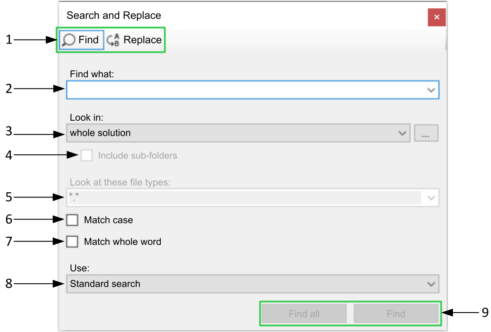

The Search and Replace dialog box allows to search and replace keywords inside the whole solution and within documents on the engineering workstation.
Click to open the Search and Replace dialog box. The results of the search will be displayed in the Search Results pad.
The following image corresponds to the Search and replace dialog box:

Find to search for a string.
Replace to substitute a keyword for another.
current document: it searches or replaces a variable in documents currently opened.
current selection: it searches or replaces a selected string.
all open documents: it searches or replaces a string in all the documents currently opened.
Whole project: it searches or replaces a string in the whole project.
whole solution: it searches or replaces a string in the whole solution.
C:/ :it searches or replaces a string in a local file.
If the check box is ticked, it searches and replace also inside the sub-folder.
If the check box is checked, it searches and replace strings that matches only the words with the same capitalization.
If the check box is checked, it searches and replace strings that matches with the whole specified word.
Standard search: find a specific keyword.
Regular expressions: refers to a sequence of symbols expressing a string to search in a longer piece of text.
Wildcards (‘*’,’?’...): searches for a word even if the user doesn't know exactly how to spell it.
Find all : It finds all the strings.
Find: It finds first matched strings.
When Replace is selected:
Replace : substitute the string with a new one.
Replace all: replace all the keys that are a match to the first entered key.